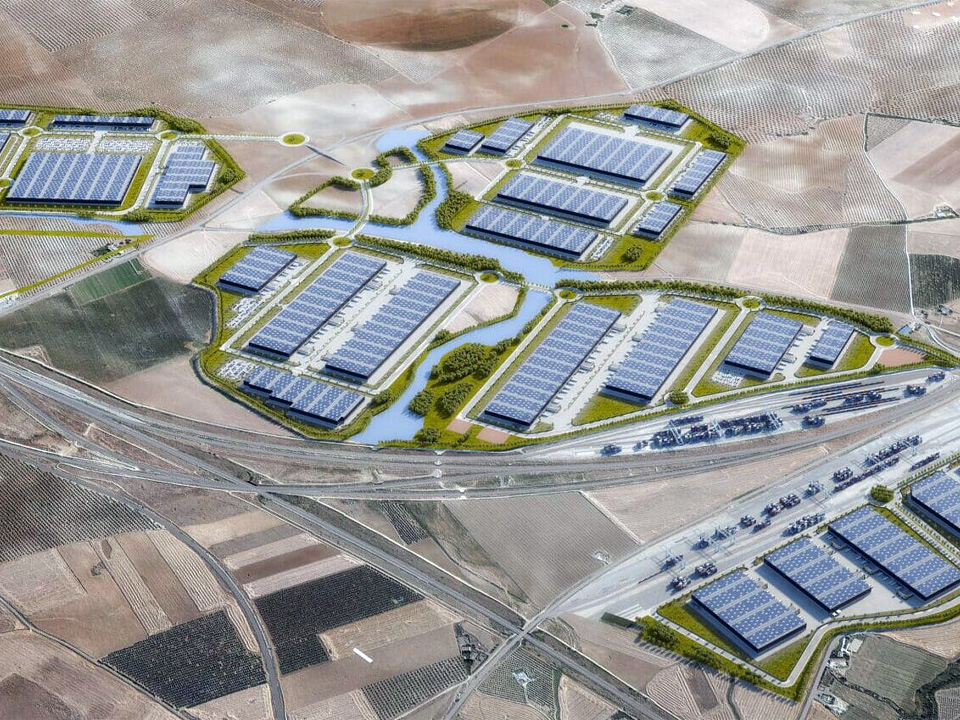
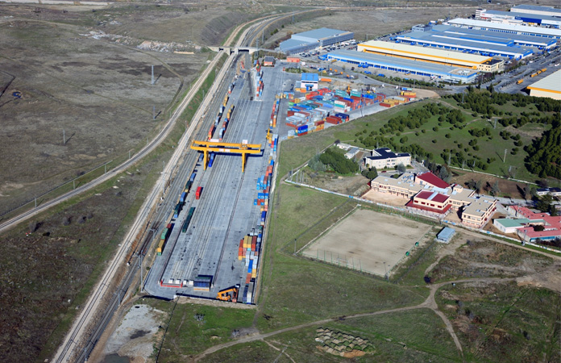
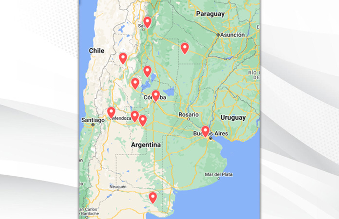

Los puertos secos en Argentina: un modelo logístico en desarrollo
El término “puerto seco” es un concepto poco utilizado en la opinión pública de nuestro país. ¿Cómo puede una terminal logística intermodal estar conectada con el comercio exterior estando lejos de nuestros mares y ríos? ¿Son eficientes estos nodos en un país de extensión territorial tan grande como el nuestro?
¿Qué es un puerto seco?
Un puerto seco es un nodo intermodal situado en zonas no fluviales ni marítimas —es decir, lejos de cursos de agua como ríos o del Mar Argentino—. Su denominación se debe a que combina distintos tipos de transporte en un mismo punto: camión, tren y vinculación con las terminales portuarias se articulan para agilizar buena parte de los trámites por los que deben atravesar las mercaderías antes de embarcarse a su destino final, como el sellado y la verificación de Aduana.
Al realizar estos trámites en el puerto seco, el proceso se agiliza y reduce los costos asociados en toda la cadena logística. En este tipo de terminales, todo está integrado: sector de oficinas administrativas y de Aduana, estacionamiento para camiones, terminal ferroviaria y depósitos de contenedores, entre otras áreas de relevancia.

Principales puertos secos en Argentina
A continuación, un relevamiento de los principales puertos secos —en proyecto o en funcionamiento— del país.
Recreo · Catamarca — En proyecto
Ubicado en la localidad de Recreo, La Paz. Se trata de un proyecto para crear un centro logístico tipo “puerto seco” en el extremo sudeste de la provincia, con el objetivo de transportar mercaderías y productos provenientes del noroeste hacia Recreo y desde allí —por vía férrea— hasta el puerto de Rosario, en Santa Fe, y viceversa. Se presenta como un Centro Logístico Internacional Polimodal (CLIP), plataforma intermodal que combinará el transporte ferroviario, terrestre y marítimo.
Chamical · La Rioja — En proyecto
Tanto el proyecto de Recreo como el de Chamical forman parte del Corredor Ferroviario Bioceánico NOA-CENTRO, clave para la activación económica de la región y para vincular a la Argentina con Chile y el sur de Brasil. El proyecto prevé dos centros logísticos —Chamical y Recreo— que actuarán como nodos de concentración, transferencia y distribución de cargas hacia el Océano Pacífico.
Tinogasta · Catamarca — En proyecto
Para la construcción del complejo binacional de Las Grutas, en Tinogasta, ya se firmó un convenio entre la provincia y el Ministerio de Transporte de la Nación para su financiamiento. Formará parte del Corredor Ferroviario Bioceánico NOA-CENTRO, junto con los puertos secos de Chamical y Recreo.
General Güemes · Salta — En proyecto
Se encuentran en ejecución las obras del Nodo Logístico Intermodal y Puerto Seco de General Güemes, que comprenden la construcción de una Terminal Multimodal y el mejoramiento del ramal C entre Metán-Güemes del Ferrocarril Belgrano. El convenio de cogestión firmado con el Ministerio de Transporte permitirá optimizar la eficiencia logística de pequeños y medianos productores en un rango aproximado de 150 km, beneficiando departamentos de Salta y Jujuy.
Pampa del Cielo · Chaco — En proyecto
Ubicado en la zona de Pampa del Cielo, entre Las Breñas y Charata. Participan diversas entidades y niveles de gobierno. Desde las cámaras de comercio de Charata y Las Breñas, junto a productores, acopiadores, el Ministerio de Transporte de la Nación y el gobierno provincial, se trabaja para su creación en el sudoeste chaqueño.
Puerto Seco Idits · Mendoza — En funcionamiento
Con una extensión de 12 hectáreas, cuenta con un beneficio estratégico por encontrarse dentro del área metropolitana de Mendoza, en el Corredor Bioceánico Central. Integra —junto con otros proyectos— una red de infraestructura y servicios complementarios al sector logístico, comercio exterior, transporte y productivo. El Paso Cristo Redentor, sobre el eje horizontal más relevante del comercio Argentina-Chile, ratifica su importancia estratégica.
Córdoba Capital · CaCEC — En funcionamiento
Las empresas colocan sus productos en contenedores de las navieras internacionales —Hamburg Süd, Cosco Shipping, Funcke Maritime, SouthAtlantic, entre otras—, que son controlados y precintados por Aduana, listos para exportarse. Se evitan pérdidas de tiempo y costos en la aduana porteña, aumentando la competitividad. Cuenta con 51.000 m² de superficie total, incluyendo Zona Primaria Aduanera (17.000 m²), Depósito Fiscal (5.000 m²), oficinas (500 m²) y playa para contenedores (6.000 m²).
ZAL Villa Mercedes · San Luis — En funcionamiento
La Zona de Actividades Logísticas (ZAL) está estratégicamente ubicada sobre el eje principal del Corredor Bioceánico que une los principales puertos de Chile y Argentina. Cuenta con una plataforma equipada para almacenaje, manipulación y distribución de productos. Con esta localización, tiene un alcance a más de 8 millones de habitantes en un radio de 500 km, proyectándose como el principal nodo de distribución del centro del país.
San Luis Logística — En funcionamiento
Polo internacional creado por el Gobierno de San Luis para consolidar ventajas competitivas de todos los sectores productivos. Ofrece unidades de negocio como Zona Primaria Aduanera, Zona Franca, plataforma multimodal de cargas, corredores de logística intermodal (Ferrosal), logística agropecuaria (Agrosal), Plan Integral Alfalfa (Alfazal) y el sistema Bitrenes Emabi.
General Rodríguez · Buenos Aires — En proyecto
En 2020, el gobierno municipal anunció la instalación de un puerto seco en un predio de 92 hectáreas propiedad de la provincia, sobre la Ruta 24, a 3 km de la Ruta 6 (vía interportuaria). Se optó por un modelo mixto que combina inversión del Estado con inversiones privadas. La inversión estatal permitirá al municipio incorporar una fuente de ingresos importante a través del cobro de tasas aduaneras.
General Conesa · Río Negro — En proyecto
En 2021, la AFIP firmó un convenio con la Municipalidad de General Conesa para implementar un puerto seco. El objetivo es acercar las tareas de fiscalización y control propias de la Aduana al territorio para facilitar y simplificar la exportación de productos agropecuarios. Los principales beneficiarios serán los pequeños y medianos productores de cebolla para exportación de la zona.
